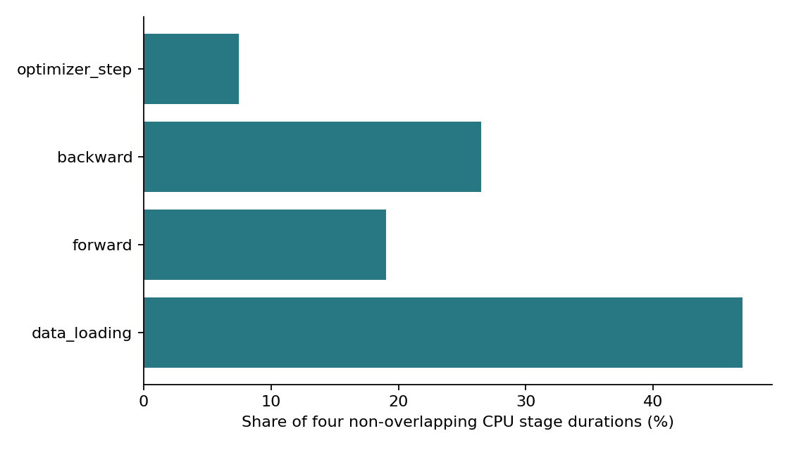
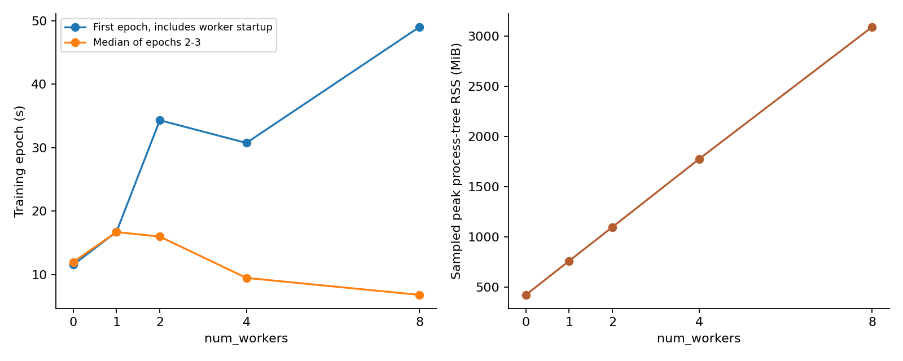
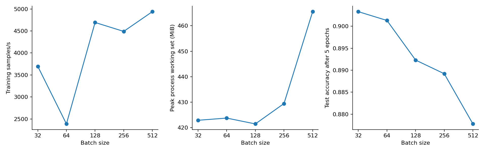
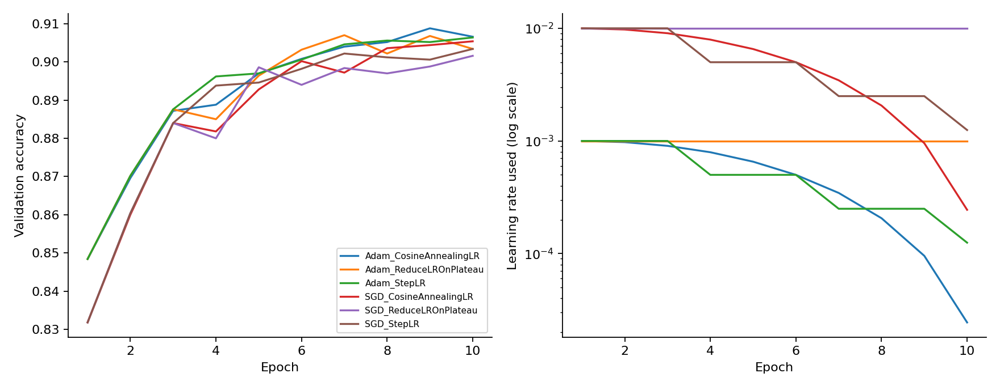
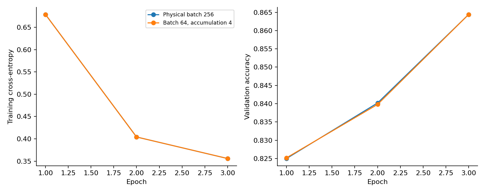
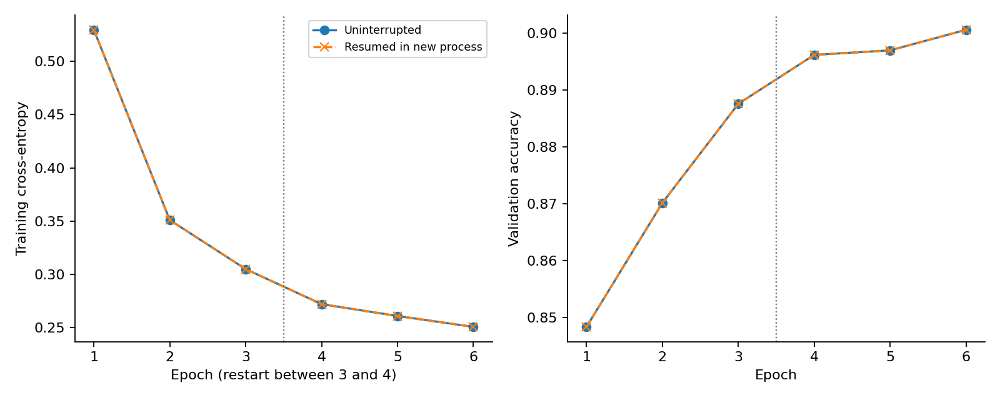

G M Robi Farhan Rojob | 73997
This is an offline view of genuine MLflow FileStore runs. Parameters and metrics: JSON export. Raw records: mlruns.
| Experiment | MLflow run ID | Status | Final validation accuracy |
|---|---|---|---|
| resume_interrupted | 75ec56aef3c8412b84ff2d5ad73ce797 | FINISHED | 90.06% |
| resume_reference | 1683d359640547c18432932fa58f3f39 | FINISHED | 90.06% |
| micro64_accum4 | 6f4b487cadea48d8bcc61470892315cf | FINISHED | 86.44% |
| effective256 | 0767dbc1d7fc4a6da5a39a40c0bf0c8d | FINISHED | 86.44% |
| Adam_ReduceLROnPlateau | f8ec7f2510494681b00769ed1084cf7c | FINISHED | 90.34% |
| Adam_CosineAnnealingLR | 18396d519aab4298af3773c229665a8e | FINISHED | 90.66% |
| Adam_StepLR | f3ec4f471989488599930bd4a7664f78 | FINISHED | 90.64% |
| SGD_ReduceLROnPlateau | 46bc5e48115f4664a7b436e53204727b | FINISHED | 90.16% |
| SGD_CosineAnnealingLR | e973c93a5f694a168cffd98312e6b748 | FINISHED | 90.54% |
| SGD_StepLR | 19e0ae5527504dcb942267ade7e9616a | FINISHED | 90.34% |
| batch_512 | cd1a3e3c422441989fd1d3fd51ad7417 | FINISHED | 88.16% |
| batch_256 | 5f6acea0cc084f34ac4a27e021fca1b4 | FINISHED | 89.18% |
| batch_128 | 99b87b60685248aa9be78f1f59362208 | FINISHED | 89.64% |
| batch_64 | dd2b5d9175274da99a3712c469d7883a | FINISHED | 90.28% |
| batch_32 | 53f7264a5a464d259acb82043c91fe96 | FINISHED | 90.26% |
| workers_8 | 93235640977f487bb5293ff74b377771 | FINISHED | 88.54% |
| workers_4 | b1a4213270d7405b91f83e924bf0c65c | FINISHED | 88.54% |
| workers_2 | 959a2873c6dc4bd8993bd91f6102d949 | FINISHED | 88.54% |
| workers_1 | 0d7b8b3ba1c84b42b8e5ef28f9aed0cc | FINISHED | 88.54% |
| workers_0 | 2c649d4388244a54bd54c2a0ad152342 | FINISHED | 88.76% |
| profile | aa0b612107954215a082c2611f79c8f2 | FINISHED | 84.84% |





